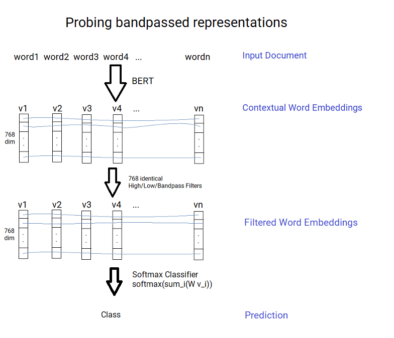
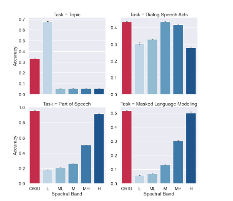
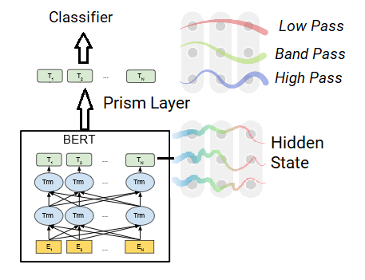
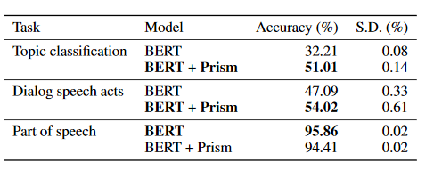
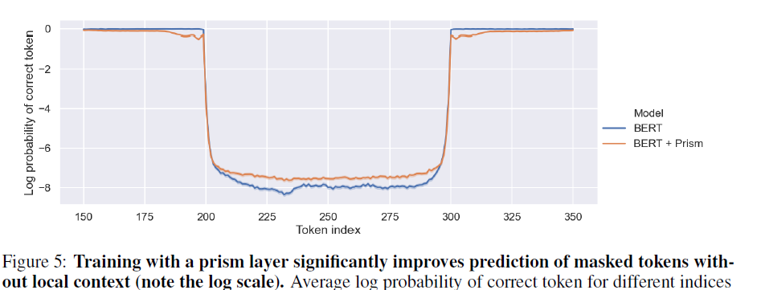

Language Through Prism
Neural language models, which have advanced the state of the art for Natural Language Processing by a huge leap over previous methods, represent the individual tokens as a sequence of vectors. This sequence of vectors can be thought of explicitly as a discrete time varying signal in each dimension, and you could decompose this signal into low frequency components, representing the information at the document level, and high frequency components, representing information at the token level and discarding higher level information. The NeurIPS 2020 paper Language Through a Prism: A Spectral Approach for Multiscale Language Representations applies this idea to BERT and shows that this decomposition can improve model performance for tasks at the paragraph or document scale.
The Tasks
There are three tasks they evaluate on, in order to evaluate performance at different scales:
- Part of Speech Tagging (word level) on Penn Treebank
- Dialogue speech act classification (utterance-level) on Switchboard Dialog Speech Acts corpus
- Topic Classification (document level) on the 20 Newsgroups dataset
- Masked Language Modelling on Wikitext-103
These are all quite old and well known tasks in their class.
Probing contextual word embeddings
BERT can give contextual word embeddings; that is an embedding for each word that takes in the surrounding context. The word embeddings can then be used for the tasks by training a softmax classifier, that is a very shallow neural net.
Concretely given the (contextual) word vectors \(v_i\), then we train a classifier \(\rm{softmax}\left(W \sum_{i \in C} \frac{1}{\lvert C \rvert}v_i\right)\), where W is a weight matrix of embedding dimension x number of classes, to be fitted using cross-entropy loss. Note that the vectors have to be averaged to the appropriate level for the task (the sum over context C, in the previous equation); for Part of Speech tagging (and Masked Language Modelling) we just use each word vector directly, for dialogue speech we average the vectors over each utterance and for topic classification we average over the whole document. I’m actually assuming that the vectors are averaged; it’s not discussed explicitly in the work and there’s no code provided to see what was done; but this seems like the most likely way to handle it.
The idea introduced in the paper is to try to try a classifier after passing the vectors through a bandpass filter at different frequencies (identically across each dimension) to see how they would do at different topics. For example a low pass filter will capture most of the document level variation of the embeddings, and a high pass filter will capture most of the word level variation (taking out the average context).

The results turn out nicely;
- the high frequency vectors (1-2 token period) best predict part of speech
- the mid frequency vectors (8-32 token period) best predict dialog
- the low frequency vectors (256+ token period) best predict document classification, doing better than the original word embeddings

The last result is particularly interesting; by throwing away information we get a better result. But assuming it is just an average at the document level, really by taking the low frequency we’re getting a better average by smoothing out some of the local noise. In fact a frequency 0 vector would in fact just be the average across each dimension, for every word.
Using Spectral Filters During Training
The second approach they take is to apply spectral filters to BERT. They take the hidden state in the last layer and divide it into 5 equal segments and apply 5 different band filters (from low to high) on those segments. They then add a classification layer and train the model on each of the tasks above, comparing it with BERT trained in the same way.

They find that for tasks above the word level that adding the Prism layer gives results better than BERT:

However I find it strange all these results are far below State of the Art:
- Part of Speech Tagging on Penn Treebank above 97% accuracy
- Dialogue Act Classification on Switchboard Corpus above 82% accuracy
- Topic Classification on 20 Newsgroups above 88% accuracy
I’m wondering if finetuning the language model would result in better scores. I think they didn’t do this because the masked task is local, as shown in the first section, and may lose information from the higher layers. However this casts doubt in my mind whether the prism layer would be useful in increasing performance in real systems.
Another thing they showed is the prism model was better at predicting missing words further away (but worse at predicting closer missing words). I would like to see a deeper analysis of this before I draw conclusions - is it just guessing common words more often?

Discussion
I’m not convinced this approach produces better models, that requires more evidence. But it seems like an interesting tool for analysing models and text. When looking at the activations relevant to a prediction you get to analyse it at different scales, so you could say whether it was driven by word, paragraph or document level features without explicitly modelling these. You could also look at the regions at this level relevant to it.
The better long range masked prediction is also potentially interesting. The best generative language models like BERT, GPT-2 and GPT-3 tend to be fine for short sentences, but tend to lose coherence after a couple of sentences. If we could force the models to focus on longer range dependencies (i.e. lower frequencies) maybe we could generate language with more coherence at the paragraph and document level. But I’m not sure how.